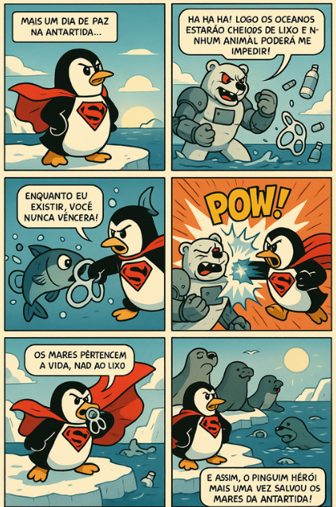
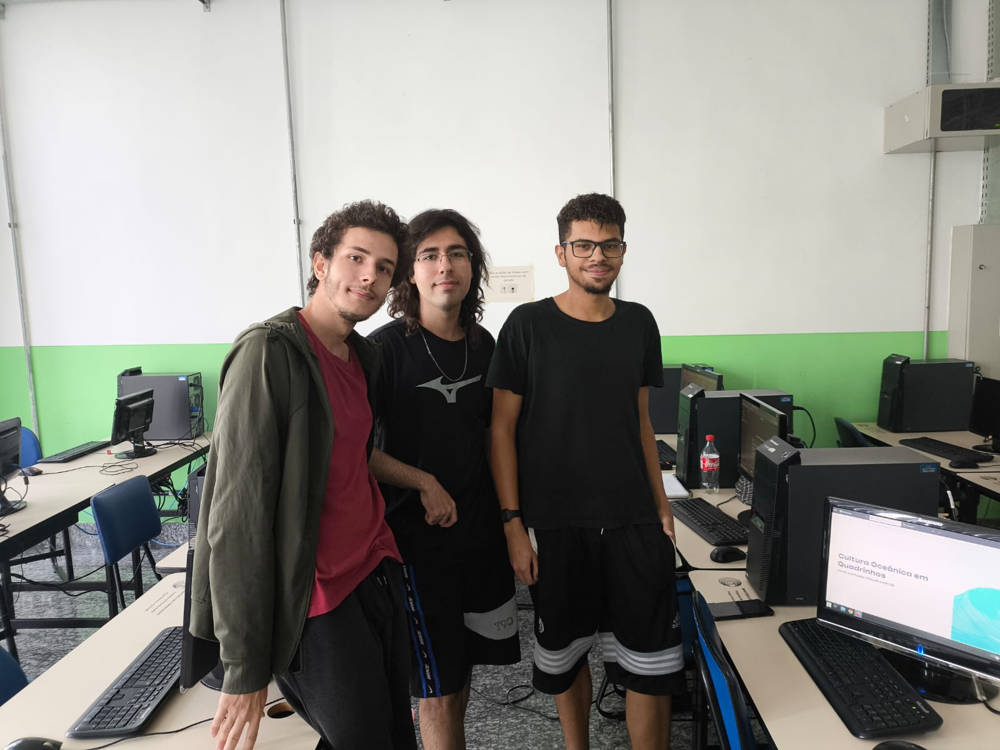
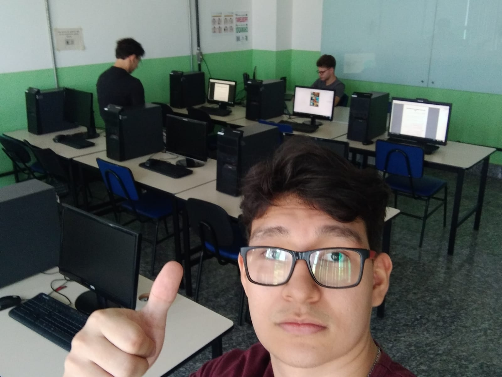
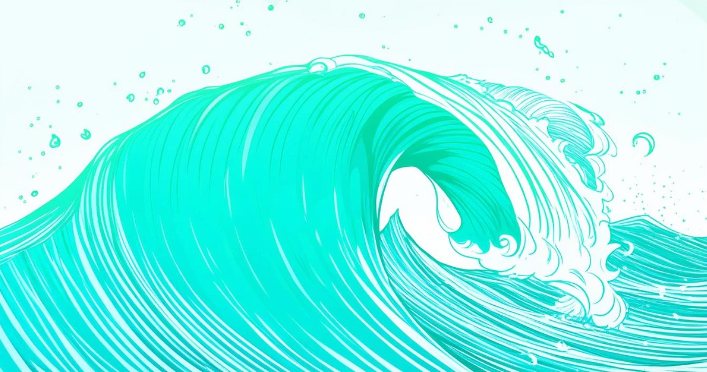

Projeto de Extensão · IFSP-SJBV SBVEXT4 · 2025
Uma oficina desenvolvida para apresentar conceitos básicos sobre Cultura Oceânica através da criação guiada de Histórias em Quadrinhos.
01 — Objetivo
A oficina teve como objetivo central apresentar conceitos básicos sobre o tema de Cultura Oceânica utilizando Histórias em Quadrinhos como ferramenta educacional.
O foco principal era engajar os estudantes do ensino fundamental 2 e outros visitantes, unindo tecnologia e educação ambiental para facilitar o entendimento da nossa relação com os mares.
Realizada no dia 02 de outubro de 2025, durante a semana de tecnologia, nossa oficina foi estruturada com duração de três a quatro horas para garantir tempo suficiente na exploração prática.
02 — Descrição
Antes da atividade, o laboratório foi devidamente organizado e preparado, com todas as ferramentas necessárias já prontas nos computadores e uma apresentação introdutória do tema projetada para a chegada dos participantes.
Durante a execução, como não houve participação do público alvo esperado, adaptamos a proposta e realizamos uma breve demonstração prática para dois alunos do IFSP, que pertenciam a outro grupo de oficina.



03 — ODS
O projeto se articula com múltiplos ODS da Agenda 2030 da ONU, contribuindo para metas globais de educação, conservação marinha e ação climática.
Conscientização sobre conservação e uso sustentável dos oceanos e recursos marinhos.
Promoção de aprendizagem inclusiva, equitativa e de qualidade para todos os estudantes.
Fortalecimento da resiliência e da capacidade adaptativa às mudanças climáticas.
Fortalecimento dos meios de implementação e revitalização da parceria global.
04 — BNCC
O projeto está alinhado a competências e habilidades da BNCC, promovendo aprendizagens integradas entre Ciências da Natureza, Língua Portuguesa, Arte e Tecnologia.
EF07CI11 / EF09CI13 — Identificar relações entre os componentes bióticos e abióticos dos ecossistemas, especialmente marinhos.
EF69LP44 — Produção de textos multimodais (quadrinhos) com adequação ao campo de atuação, gênero e propósito comunicativo.
EF69AR05 — Experimentar e desenvolver habilidades em artes visuais, incluindo linguagem dos quadrinhos e narrativa sequencial.
Como expresso na BNCC (pág. 473 - 475), a preocupação com os impactos das transformações ocasionadas pela tecnologia na sociedade estão explíticas em diversas áreas, já se iniciando nas competências gerais para a Educação Básica e se tornando imprescindível a ampliação de tais etapas durante o Ensino Médio, dada a intrínseca relação entre as culturas juvenis e a cultura digital. Dessa forma, o projeto apresentado auxilia os estudantes a desenvolverem as seguintes habilidades:
Envolve as capacidades de compreender, analisar, definir, modelar, resolver, comparar e automatizar problemas e suas soluções, de forma metódica e sistemática, por meio do desenvolvimento de algoritmos.
Envolve as aprendizagens relativas às formas de processar, transmitir e distribuir a informação de maneira segura e confiável em diferentes artefatos digitais – tanto físicos (computadores, celulares, tablets etc.) como virtuais (internet, redes sociais e nuvens de dados, entre outros) –, compreendendo a importância contemporânea de codificar, armazenar e proteger a informação.
Envolve aprendizagens voltadas a uma participação mais consciente e democrática por meio das tecnologias digitais, o que supõe a compreensão dos impactos da revolução digital e dos avanços do mundo digital na sociedade contemporânea, a construção de uma atitude crítica, ética e responsável em relação à multiplicidade de ofertas midiáticas e digitais, aos usos possíveis das diferentes tecnologias e aos conteúdos por elas veiculados, e, também, à fluência no uso da tecnologia digital para expressão de soluções e manifestações culturais de forma contextualizada e crítica.
05 — Modelo Pronto
Este projeto demonstra como a Inteligência Artificial pode ser utilizada na criação de Histórias em Quadrinhos com temática oceânica — tornando a narrativa ambiental acessível, criativa e envolvente para qualquer estudante.
Com um roteiro de prompt bem estruturado, é possível orientar a IA para gerar cenas, personagens, diálogos e até onomatopeias — sem precisar de habilidades de desenho ou design.
O processo segue a mesma lógica trabalhada na oficina:
06 — Materiais
Acesse os slides interativos criados no Gamma App, contendo o material introdutório completo utilizado para apresentar a Cultura Oceânica e os fundamentos para a criação de quadrinhos.
Este material guiou as discussões com os alunos durante a demonstração prática.
Abrir Apresentação